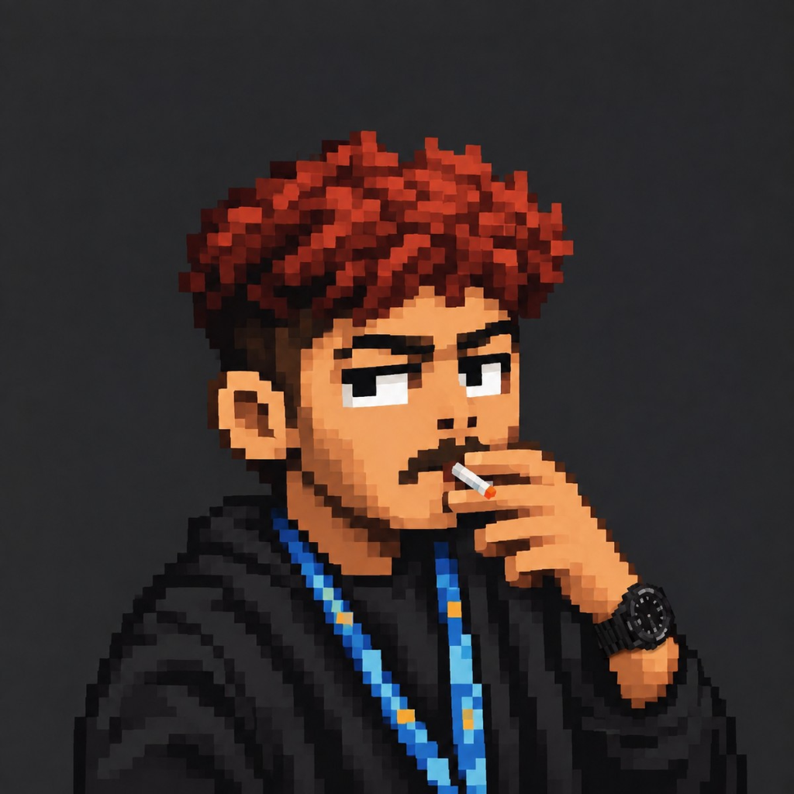
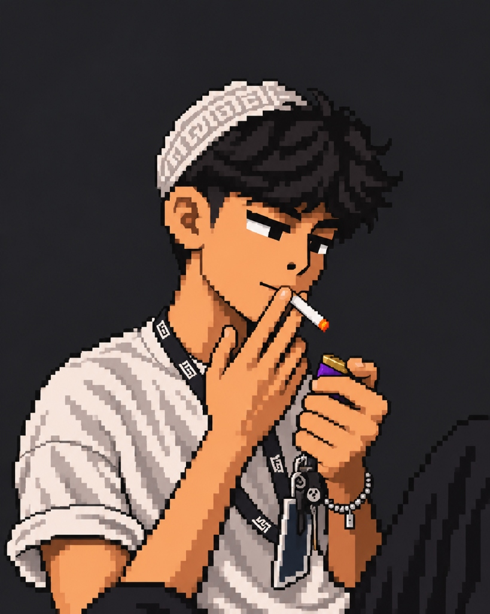

Desain + kode
Bukan
template
template
Dibuat di Indonesia
Web yang bikin orang noleh
Studio web independen untuk startup, kreator, dan brand yang ingin tampil beda.
Studio web independen untuk startup, kreator, dan brand yang ingin tampil beda.
Desainer dan developer duduk bersama sejak hari pertama, jadi tidak ada desain yang ternyata sulit dibuat.
Setiap minggu kamu menerima versi yang bisa diklik, bukan menunggu sebulan untuk melihat hasilnya.
Kode, domain, dan akun hosting atas namamu sejak awal. Tidak ada langganan yang mengikat.

